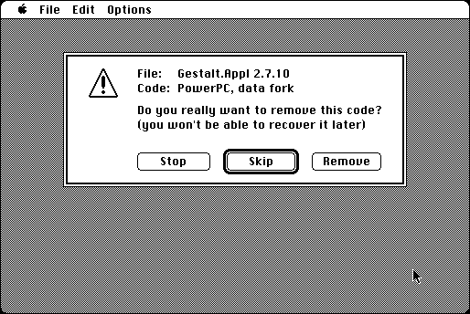

Download
power-p-check-32-fat.zip (131K) PowerPCheck 3.2 repackaged into a zipped hfs disk image and checksum file. The disk image can be mounted with Mini vMac.
power-p-check-32-fat.hqx (180K) PowerPCheck 3.2 in the original format.
copyright: Alessandro Levi Montalcini
mod date: Apr 30, 1997
license: Freeware
last known url
(gone)
A utility that can find, and optionally remove, PowerPC code in applications and other files, within a folder.

If you find these downloads useful, please consider helping the Gryphel Project, which hosts them.
Here are the md5 checksums for the downloads, signed with Gryphel Key 5:
--------- GRY SIGNED TEXT --------- db37832e79930e804db0315df5f68cf2 power-p-check-32-fat.zip b95f0c362f28576874fec0674c88d1c0 power-p-check-32-fat.hqx ------- BEGIN GRY SIGNATURE ------- Gry/4Xa8CFcUzxdN/IqLcUylUn5uAW2dh53HBQ0tFQy2S8E6QC6HflsHRRBtlqAc BoDZr+aII3BvfI0j2249bKdN45eb3RfIyku3lxUnHiOX+m/gCDpgDUpS8d+9M7rJ p1DwUcI1/duLnfock0VSBYhbtIb4Um4Lo+ltpv/4VIz3TpRxq68hceaQoIwNPepQ -------- END GRY SIGNATURE --------